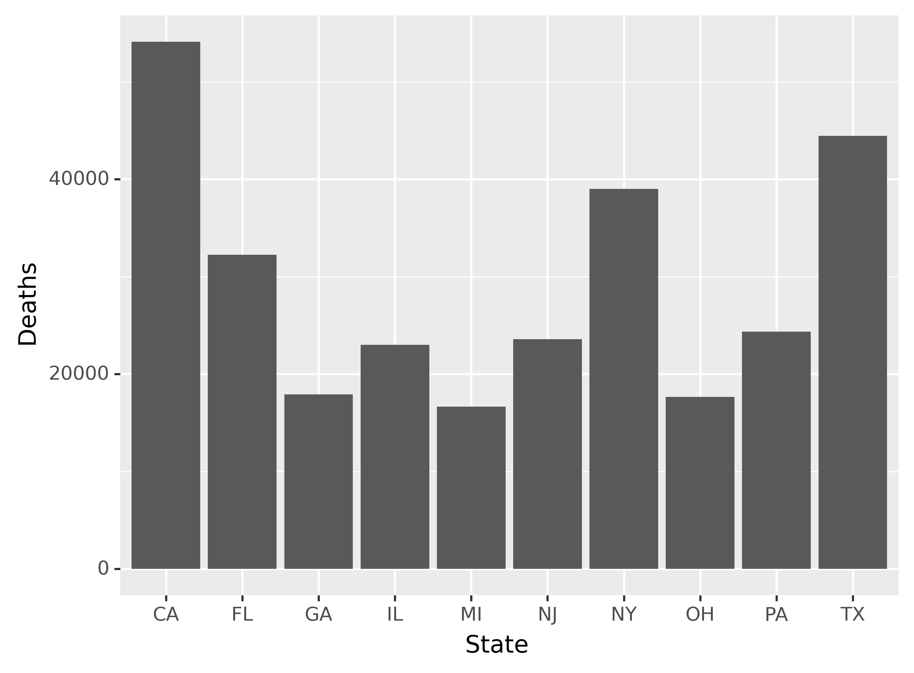
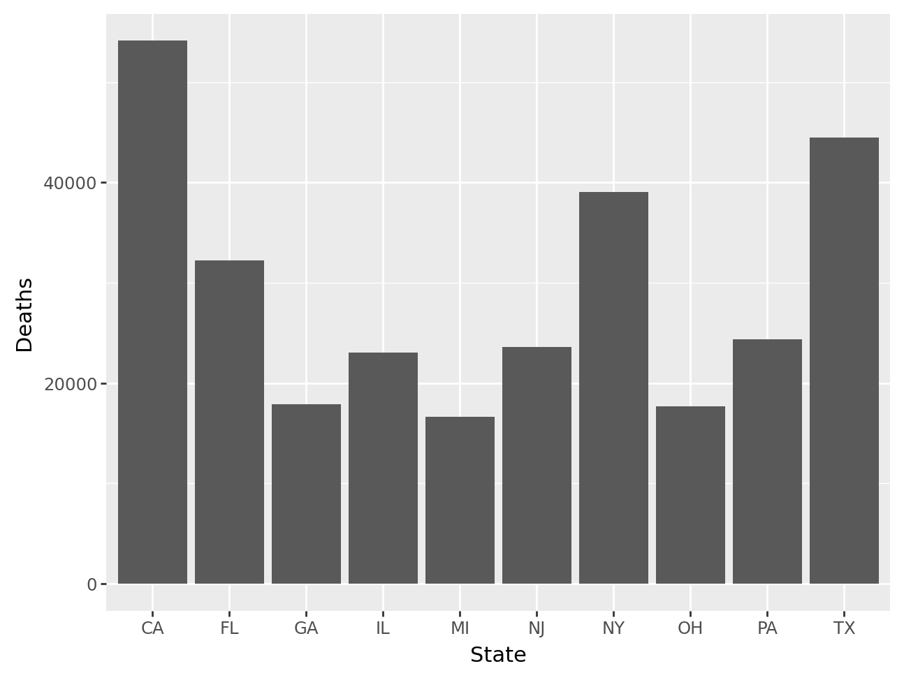

covid = pd.read_csv("data/covid.csv")Group and summarize data
Summarize data
In this milestone, you’ll use groupwise summaries to compute the total deaths for each state and then plot the results for the states with the highest values.
Recreation
Part 1 - Import
Before you begin, you will need to import the covid data set. Use the code chunk below to read the data from the data file covid.csv, which is stored in the data/ folder in your working directory. Be sure to save the data set to a variable named covid.
Compute total deaths
Run the code below to compute the total deaths for the state of New York.
subset = covid.loc[covid['state'] == 'NY']
subset['deaths'].sum()39029Part 3 - Summarize data
Now, you’ll compute the total deaths for each state. Run the code below to see a table.
solution = pd.read_csv('data/milestone05.csv')
solution| state | cases | deaths | |
|---|---|---|---|
| 0 | CA | 3501341 | 54124 |
| 1 | TX | 2686818 | 44451 |
| 2 | NY | 1681169 | 39029 |
| 3 | FL | 1909209 | 32266 |
| 4 | PA | 948643 | 24349 |
| 5 | NJ | 812609 | 23574 |
| 6 | IL | 1198331 | 23014 |
| 7 | GA | 1023485 | 17906 |
| 8 | OH | 978471 | 17656 |
| 9 | MI | 656058 | 16658 |
Your task is to use what you’ve learned about functions and grouped summaries to transform covid into this table.
You will need to:
- Group the data
- Summarize the total cases and total deaths for each group
- Use
.nlargest()to find the top ten states with the highest number of total deaths
Work in the code chunk below. Save the result as cases_deaths. We will use the result in Part 4.
cases_deaths = covid.groupby('state').agg({
'cases' : 'sum',
'deaths' : 'sum'}).nlargest(10, 'deaths').reset_index()Run the following code chunk to test whether your table matches the solution:
# If your answer is correct, the comparison should return an empty DataFrame.
cases_deaths.reset_index(drop=True).compare(solution)Part 4 - Visualize it
Finally, use the new cases_deaths data to recreate the plot below.

import plotnine as p9
(
p9.ggplot(cases_deaths, p9.aes(x='state', y='deaths'))
+ p9.geom_col()
+ p9.labs(x='State', y='Deaths')
)
Extension
As an optional final extension, create a Quarto report summarizing the work done in your previous milestones, either with the project data or your own data.
In this report, include:
- Some text about the data and your goals in data exploration
- A small table and/or data visualization(s)
- A short block of text that explains the figure and makes use of some of the text styling available within Quarto
See an example Quarto report here.